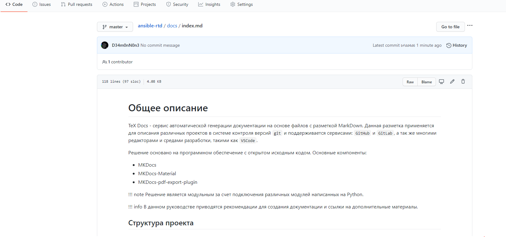
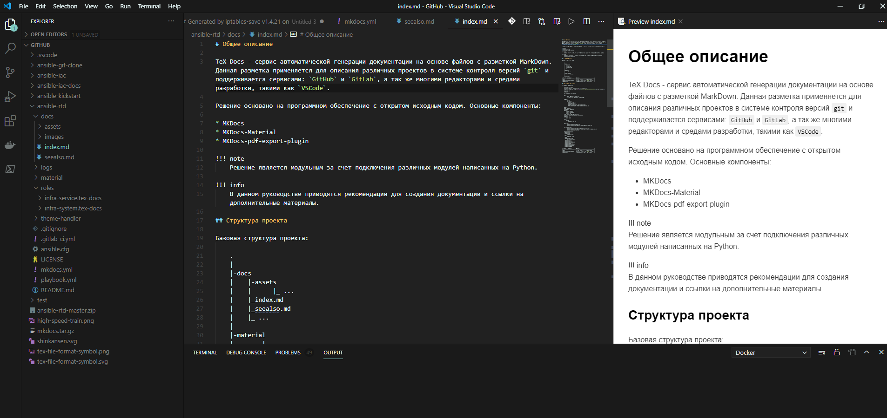

Общее описание¶
TeX Docs - сервис автоматической генерации документации на основе файлов с разметкой MarkDown. Данная разметка применяется для описания различных проектов в системе контроля версий git и поддерживается сервисами: GitHub и GitLab, а так же многими редакторами и средами разработки, такими как VSCode.
¶
¶
Решение основано на программном обеспечение с открытом исходным кодом. Основные компоненты:
- MKDocs
- MKDocs-Material
- mkdocs-with-pdf
Примечание
Решение является модульным за счет подключения различных модулей написанных на Python.
Для информации
В данном руководстве приводятся рекомендации для создания документации и ссылки на дополнительные материалы.
Структура проекта¶
Базовая структура проекта:
.
|
|-docs
| |-assets
| | |_ ...
| |_index.md
| |_seealso.md
| |_ ...
|
|-material
| |_ ...
|
|_mkdocs.yml
| Директории и файлы | Описание |
|---|---|
| docs | основная директория с документацией |
| material | тема формирования стиля html страниц |
| mkdocs.yml | конфигурационный файл с настройками |
Файл конфигурации проекта¶
texdocs.yml
site_name: "\< Название документации >\"
site_author: "\< Автор >\"
site_description: >-
\< Название под которым документ будет опубликован в TexDocs >\
repo_name: \< Идентификатор git репозитории >\
repo_url: \< URL git репозитории >\
edit_uri: ""
use_directory_urls: false
copyright: Copyright © <a href="\< Адрес сайта автора >\">\< Автор >\</a>.
nav:
- '\< Название главной страницы >\': 'index.md'
- '\< Название раздела >\':
- '\< Название страницы >\': '\< >\.md'
plugins:
- autolinks
- search:
lang:
- en
- ru
- section-index
- table-reader
- thumbnails:
style: margin-top:5px;margin-bottom:5px;margin-right:25px
- git-revision-date-localized
- git-revision-date
- macros
- minify:
minify_html: true
- with-pdf:
copyright: \< Автор >\
cover_subtitle: ''
output_path: \< Имя файла PDF >\.pdf
extra_css:
- assets/extra.css
extra_javascript:
- assets/extra.js
- assets/tex-mml-chtml.js
theme:
name: material
custom_dir: material
language: ru
features:
- content.tabs.link
- navigation.indexes
- navigation.top
- navigation.tracking
- search.highlight
- search.share
- search.suggest
- toc.integrate
palette:
- scheme: default
primary: blue grey
accent: red
font:
text: Roboto
code: Roboto Mono
favicon: assets/img/favicon/favicon.png
logo: assets/img/logo/logo.svg
markdown_extensions:
- admonition
- codehilite:
linenums: true
- toc:
permalink: true
slugify: !!python/name:pymdownx.slugs.uslugify
- meta
- pymdownx.betterem:
smart_enable: all
- pymdownx.caret
- pymdownx.details
- pymdownx.inlinehilite
- pymdownx.magiclink
- pymdownx.mark
- pymdownx.smartsymbols
- pymdownx.superfences
- pymdownx.tabbed
- pymdownx.betterem:
smart_enable: all
- pymdownx.keys
- pymdownx.tasklist:
custom_checkbox: true
- markdown_blockdiag:
format: svg
- markdown_include.include
- markdown.extensions.attr_list
extra:
generator: false
homepage: http://\<URL main site>\
social:
- icon: fontawesome/solid/home
link: http://\<URL main site>\
name: Tex-docs
- icon: fontawesome/brands/gitlab
link: https://\<URL git server>\
| Разделы и параметры | Описание |
|---|---|
| site_name | Имя проекта |
| site_description | Описание проекта |
| repo_name | Имя проекта в git, необходимо для формирования ссылки для редактирования |
| repo_url | Ссылка на проект в git |
| nav | Подключаемые файлы с документацией |
| plugins | Подключяемые расширения |
| output_path | Имя файла pdf. По умолчанию: combined.pdf |
| theme | Тема оформления html страниц |
| extra | Дополнительные настройки |
| markdown_extensions | Модули обработки разметки |
Установленные расширения¶
Список расширений
- mike
- WeasyPrint>=44
- click-man
- mkpdfs-mkdocs
- mkdocs-autozip
- mkdocs-encryptcontent-plugin
- mkdocs-exclude
- mkdocs-bootstrap-tables-plugin
- mkdocs-macros-plugin
- mkdocs-material>=5.3.3
- mkdocs-material-extensions>=1.0
- mkdocs-git-revision-date-plugin
- mkdocs-git-revision-date-localized-plugin
- mkdocs-markdownextradata-plugin
- mkdocs-mdpo-plugin
- mkdocs-minify-plugin
- mkdocs-newsletter
- mkdocs-rss-plugin
- mkdocs-section-index
- mkdocs-table-reader-plugin
- mkdocs-tooltipster-links-plugin
- mkdocs-thumbnails
- mkdocs-user-defined-values
- mkdocs-vim-md-tags-plugin
- mkdocs-with-pdf
Последнее обновление: February 2, 2024